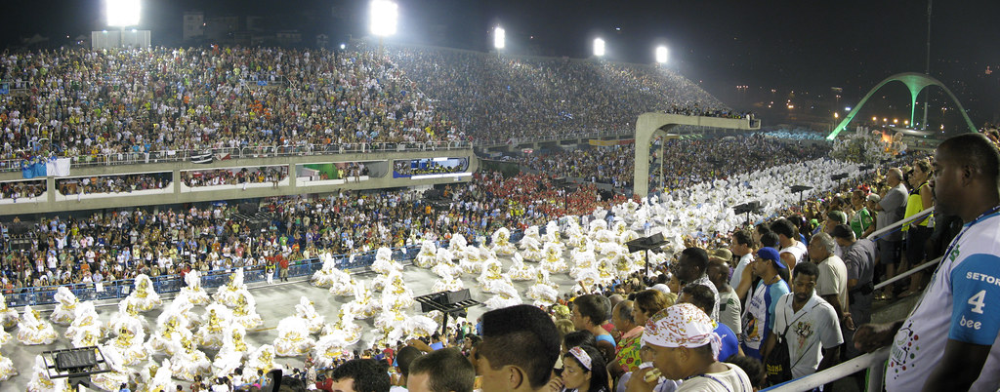

Durante os carnavais medievais, por volta do século XI, no período fértil para a agricultura, homens jovens que se fantasiavam de mulheres saíam às ruas e aos campos durante algumas noites. Diziam-se habitantes da fronteira do mundo dos vivos e dos mortos e invadiam os domicílios, com a aceitação dos que lá habitavam, fartando-se com comidas e bebidas, e também com os beijos das jovens das casas.
Durante o Renascimento, nas cidades italianas, surgia a commedia dell'arte, teatros improvisados cuja popularidade ocorreu até o século XVIII. Em Florença, canções foram criadas para acompanhar os desfiles, que contavam ainda com carros decorados, os trionfi. Em Roma e Veneza, os participantes usavam a bauta, uma capa com capuz negro que encobria ombros e cabeça, além de chapéus de três pontas e uma máscara branca.
O Carnaval é tradicionalmente uma festa popular realizada em diferentes locais do mundo, sendo a mais celebrada no Brasil.
Apesar do forte secularismo presente no Carnaval, a festa é tradicionalmente ligada ao catolicismo, uma vez que sua celebração antecede a Quaresma.
Mas diferente do que pensam, não é invenção brasileira, sua origem remonta à Antiguidade.
